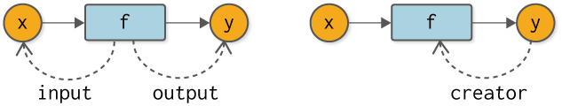
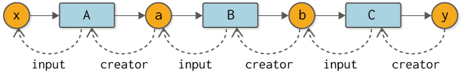

ステップ7 バックプロパゲーションの自動化¶
前ステップまでに実装したコード
[1]:
import numpy as np
class Variable:
def __init__(self, data):
self.data = data
self.grad = None
class Function:
def __call__(self, input):
x = input.data
y = self.forward(x)
output = Variable(y)
self.input = input
return output
def forward(self, x):
raise NotImplementedError()
def backward(self, gy):
raise NotImplementedError()
class Square(Function):
def forward(self, x):
y = x ** 2
return y
def backward(self, gy):
x = self.input.data
gx = 2 * x * gy
return gx
class Exp(Function):
def forward(self, x):
y = np.exp(x)
return y
def backward(self, gy):
x = self.input.data
gx = np.exp(x) * gy
return gx
前ステップで、バックプロパゲーションを動かすことには成功しました。しかし、そこでは逆伝播の計算を手作業でコーディングする必要がありました。これが意味するのは、新しい計算を行うたびに、私たち自身の手で逆伝播用のコードを書く必要があるということです。たとえば図7-1のようないくつかの計算グラフを考えた場合、それぞれの計算で逆伝播のためのコードを手作業で書かなければなりません。それはミスが起きる可能性があり、何よりも退屈な作業です。退屈なことはPythonにやらせましょう！

図7-1 様々な計算グラフの例（変数名は省略し、関数をクラス名で記す）
次に進むべき道は、逆伝播の自動化です。より正確に言えば、通常の計算（順伝播）を行えば――たとえ、それがどのような計算であったとしても――その逆伝播が自動で行われる仕組みを作ることです。いよいよこれからが、Define-by-Runの核心に触れる場所になります！
NOTE
Define-by-Runとは、ディープラーニングで行う計算の「つながり」を、計算を行うタイミングで作る仕組みのことです。これは「動的計算グラフ」とも呼ばれます。Define-by-Runについて、またその利点については「コラム Define-by-Run」で詳しく説明します。
ところで、図7-1で示した計算グラフは、どれもが一直線に並んだ計算です。そのため、関数の順番をリストの形で保持すれば、後は、それを逆向きに辿ることで、逆伝播を自動で行えます。しかし、枝分かれした計算グラフや、変数が複数回利用されるような複雑な計算グラフに関しては、単純なリストによる手法は使えません。私たちのこれからの目標は、どれだけ複雑な計算グラフであったとしても、自動で逆伝播できる仕組みを構築することです。
WARNING
実は、リストのデータ構造を工夫すれば、行った計算をリストに追加していくだけで、任意の計算グラフに対して逆伝播を正しく行うことも可能です。そのデータ構造は、Wengertリストと呼ばれます（または「テープ」とも呼ばれます）。本書では、Wengertリストについての説明は行いません。Wengertリストに興味のある方は文献[2] [3]などを参考にしてください。また、Wengertリストに対するDefine-by-Runの利点は、文献[4]などを参考にしてください。
7.2 逆伝播の自動化のために¶
逆伝播を自動化するにあたり、変数と関数の関係性について考えるところからスタートします。まずは、関数の視点から、つまりは「関数から変数はどのように見えるか」ということについて考えます。関数から見ると、変数は「入力」と「出力」として存在します。図7-2の左図に示すように、関数にとって変数は「入力された変数（input）」と「出力した変数（output）」として存在します（図の破線は参照を示します）。

図7-2 関数から見た変数との関係性（左図）と変数から見た関数との関係性（右図）
続いて、変数の視点から関数はどう見えるでしょうか？ ここで注目したい点は、変数が関数によって「生み出される」ということです。言い換えると、変数にとって関数は「生みの親」です。つまりは、creator（生み出す者）となる存在です。もし生みの親である関数が存在しないのであれば、それは関数以外によって生み出された変数、たとえばユーザによって与えられた変数であると考えられます。
それでは、図7-2で表される関数と変数の「つながり」を私たちのコードに取り入れましょう。ここでは、その「つながり」を、通常の計算（順伝播）が行われるまさにそのタイミングで作ることにします。そのために、まずはVariableクラスに対して次のようにコードを追加します。
[2]:
class Variable:
def __init__(self, data):
self.data = data
self.grad = None
self.creator = None # 追加したコード
def set_creator(self, func): # 追加したコード
self.creator = func # 追加したコード
ここでは、creatorというインスタンス変数を追加します。そして、creatorを設定するためのメソッドをset_creatorメソッドとして追加します。続いて、Functionクラスに対して次のようにコードを追加します。
[3]:
class Function:
def __call__(self, input):
x = input.data
y = self.forward(x)
output = Variable(y)
output.set_creator(self) # 出力変数に生みの親を覚えさせる
self.input = input
self.output = output # 出力も覚える
return output
def forward(self, x):
raise NotImplementedError()
def backward(self, gy):
raise NotImplementedError()
順伝播の計算によりoutputというVariableインスタンスが生成されます。このとき、その生成されたoutputに対して、「私（関数である自分自身）が生みの親であること」を覚えさせます。これこそが、動的に「つながり」を作る仕掛けの核心部です。なお、ここでは次のステップを見据えて、インスタンス変数のoutputに出力を設定しています。
NOTE
DeZeroの動的計算グラフの仕組みは、実際の計算が行われるときに、変数という「箱」にその「つながり」を記録することによって行われます。同様のアプローチは、ChainerやPyTorchでも行われています。
このように、「つながり」を持ったVariableとFunctionがあれば、計算グラフを逆向きに辿ることができます。具体的なコードで示すと、次のようになります。
[4]:
class Square(Function):
def forward(self, x):
y = x ** 2
return y
def backward(self, gy):
x = self.input.data
gx = 2 * x * gy
return gx
class Exp(Function):
def forward(self, x):
y = np.exp(x)
return y
def backward(self, gy):
x = self.input.data
gx = np.exp(x) * gy
return gx
A = Square()
B = Exp()
C = Square()
x = Variable(np.array(0.5))
a = A(x)
b = B(a)
y = C(b)
# 逆向きに計算グラフのノードを辿る
assert y.creator == C
assert y.creator.input == b
assert y.creator.input.creator == B
assert y.creator.input.creator.input == a
assert y.creator.input.creator.input.creator == A
assert y.creator.input.creator.input.creator.input == x
まずはassert文について説明します。assert文はassert ...のように使います。ここで、...がTrueでない場合は例外が発生します。そのため、assert文は、条件を満たしているかどうかの確認に利用できます。ちなみに、上のコードを実行すると、問題なく（例外が発生することなく）実行できるので、assert文の条件をすべて満たしていることが分かります。
上のコードが示すように、Variableのインスタンス変数creatorで1つ前のFunctionへ辿ります。そして、Functionのインスタンス変数inputで1つ前のVariableへ辿ります。このつながりを図示すれば、図7-3のようになります。

図7-3 yを起点とした計算グラフを逆向きに辿る
図7-3のとおり、私たちの計算グラフは、関数と変数の間の「つながり」によって構築されます。そして重要なことに、その「つながり」は、実際に計算が行われるときに（順伝播でデータを流すときに）作られます。この特徴こそがDefine-by-Runです。つまりは、データを流すことによって「つながり」が作られるのです。
なお、図7-3のような「つながり」によるデータ構造は「リンク付きノード」と呼ばれます。ノードはグラフを構成する要素であり、リンクは別のノードへの参照を表します。つまり私たちは、「リンク付きノード」というデータ構造で計算グラフを表現しているのです。
7.3 逆伝播を試す¶
それでは、変数と関数のつながりを利用して、逆伝播を行ってみましょう。まずはyからbまでの逆伝播を行います。これは次のように実装できます（参考のために図も合わせて示します）。

[5]:
y.grad = np.array(1.0)
C = y.creator # 1. 関数を取得
b = C.input # 2. 関数の入力を取得
b.grad = C.backward(y.grad) # 3. 関数のbackwardメソッドを呼ぶ
ここでは、yのインスタンス変数creatorから関数を取得し、その関数のinputによって入力変数を取得します。そして、関数のbackwardメソッドを呼び出します。これに続いて、次は変数bからaへの逆伝播の図とコードを示します。

[6]:
B = b.creator # 1. 関数を取得
a = B.input # 2. 関数の入力を取得
a.grad = B.backward(b.grad) # 3. 関数のbackwardメソッドを呼ぶ
ここでも前と同じロジックで逆伝播を行います。具体的には、
関数を取得
関数の入力を取得
関数の
backwardメソッドを呼ぶ
という流れです。それでは最後に、変数aからxへの逆伝播です。

[7]:
A = a.creator # 1. 関数を取得
x = A.input # 2. 関数の入力を取得
x.grad = A.backward(a.grad) # 3. 関数のbackwardメソッドを呼ぶ
print(x.grad)
3.297442541400256
以上で、すべての逆伝播が終わりました。
7.4 backwardメソッドの追加¶
すでにお察しのとおり、先ほど示した逆伝播のコードは、同じ処理フローが繰り返し現れます。より正確に言えば、変数から1つ前の変数へと遡る逆伝播のロジックが、すべて同じです。そこで、その繰り返しの処理を自動化できるように、Variableクラスにbackwardという新しいメソッドを追加します。
[8]:
class Variable:
def __init__(self, data):
self.data = data
self.grad = None
self.creator = None
def set_creator(self, func):
self.creator = func
def backward(self):
f = self.creator # 1. 関数を取得
if f is not None:
x = f.input # 2. 関数の入力を取得
x.grad = f.backward(self.grad) # 3. 関数のbackwardメソッドを呼ぶ
x.backward() # 自分より1つ前の変数のbackwardメソッドを呼ぶ（再帰）
backwardメソッドは、これまで繰り返し現れた処理フローとほとんど同じです。具体的には、Variableのcreatorから関数を取得し、その関数の入力変数を取り出します。そして、関数のbackwardメソッドを呼び出します。最後に、自分よりも1つ前の変数に対して、その変数のbackwardメソッドを呼び出します。これによって、各変数のbackwardメソッドが再帰的に呼ばれるようになります。
NOTE
VariableインスタンスのcreatorがNoneの場合、逆伝播はそこでストップします。その場合、Variableインスタンスは関数以外の方法で生成されたこと――主にユーザによって与えられた変数であること――を意味します。
それでは、この新しいVariableを使って、自動化されたバックプロパゲーションを行ってみましょう。
[9]:
A = Square()
B = Exp()
C = Square()
x = Variable(np.array(0.5))
a = A(x)
b = B(a)
y = C(b)
# 逆伝播
y.grad = np.array(1.0)
y.backward()
print(x.grad)
3.297442541400256
上記のように、変数yのbackwardメソッドを呼べば、自動で逆伝播が行われます。実行して得られる結果も、これまでと同じです。おめでとうございます！ これでDeZeroで最も重要な自動微分のベースは完成しました。